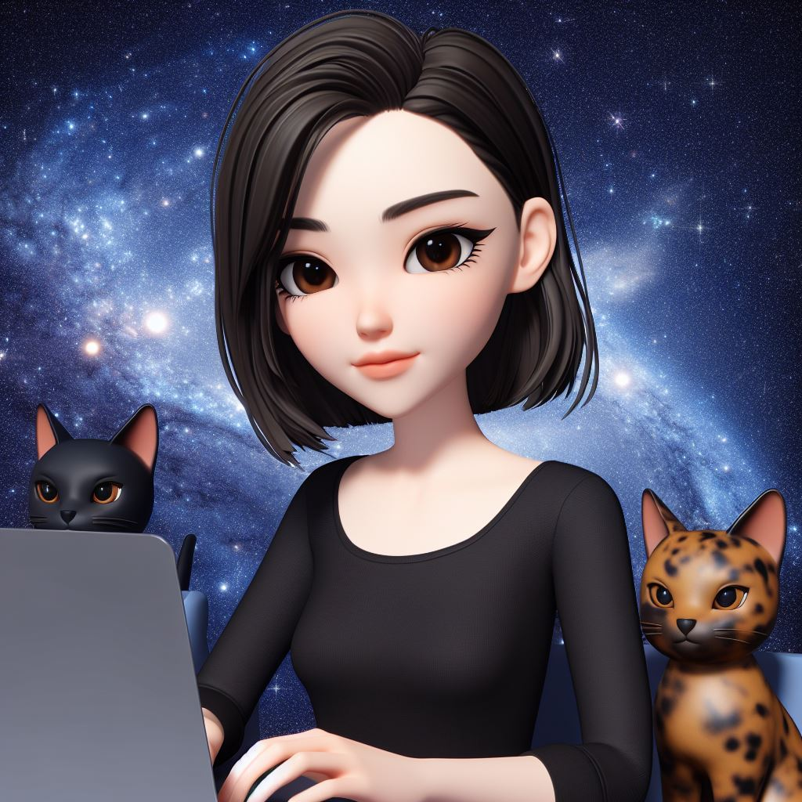

QUIÉNES SOMOS
Esther García
Soy diseñadora gráfica especializada en HTML, CSS y WordPress. Como quería expandir mis conocimientos y explorar nuevas rutas, decidí aventurarme en el apasionante mundo de la programación web al completo (¡Hola GitHub, JavaScript, React, etc!). Gracias a Adalab, espero que este sea mi primer paso para convertirme en una superheroína digital que pueda combinar diseño y programación para crear sitios web de los que sentirme orgullosa y que los demás se sientan orgullosos. ¡Allá vamos!
Maialen Muñoa
Soy periodista con más de 14 años de experiencia, mamá de dos niñas y ahora, también, Adalaber. Desde que pisé por primera vez una redacción allá por 2009 he aprendido a ir de la mano de la tecnología, abrazando sus constantes transformaciones y modernizando mi profesión hacia un perfil más digital. Tanto en mi trabajo como en mi vida personal estoy siempre abierta a los cambios, me gusta descubrir algo nuevo cada día. En un mundo cada vez más digital, estoy siempre conectada. Mi nuevo reto: convertirme en programadora web.
Marta Almeida
En mi trayectoria laboral he pasado por diversos puestos, desde almacén a hostelería, hasta asentarme durante más de 7 años en una empresa de informantica siendo encargada en departamento de Administración y Contabilidad. Últimamente me ha surgido gran interés por la programación. Curioseé y descubrí que me gusta, además comprobé el gran abanico de opciones y oportunidades laborales que ofrece. Estoy segura de que este va a ser mi camino en el futuro. Por ello he tomado la decisión de adentrarme en este mundo y formar parte como alumna en una de las mejores escuelas web para convertirme en programadora y Adalaber.
Sara Sánchez
Enfermera en Reino Unido con más de 10 años de experiencia en diferentes sectores. En los dos últimos años me formé como Team leader de mi departamento, lo que me ha permitido mejorar el trabajo en equipo y ampliar mis habilidades administrativas. Debido a esto he entrado más en contacto con el sector tecnológico y me he dado cuenta de cómo también la tecnología puede utilizarse para mejorar la vida de las personas. Por eso he decidido dar el salto y comenzar mi carrera como programadora. Estoy muy entusiasmada con este reto y creo que puedo desarrollarme mucho como persona y como profesional.

Virginia De la Rosa
He dedicado los primeros años de mi vida laboral a trabajar en una de mis pasiones, el mundo de la cosmética y la estética. Años muy disfrutados hasta que llegó la hora de cambiar el rumbo y me sumergí en el sector de la logística, donde fui consciente de que tengo capacidades no explotadas y, además, mi mente le abrió la puerta a las nuevas tecnologías. Con esa curiosidad incipiente decidí empezar programación web en Adalab, y a día de hoy veo el avance de mi carrera profesional orientada a este mundo que no para de crecer, al igual que las personas.